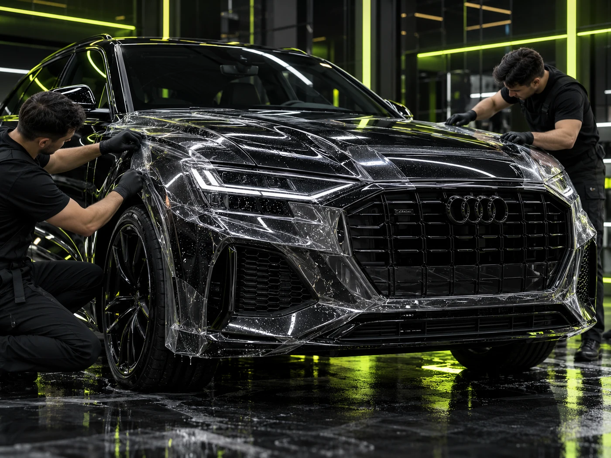

НАПРАВЛЕНИЕ 01 / 08
Чистота начинается с правильной последовательности.
От бережной мойки до глубокой очистки — выбирайте задачи под состояние автомобиля, а не лишние работы.
- Бережная очисткаПодбираем тип мойки и последовательность ухода под состояние покрытия.
- Сложные загрязненияОтдельно предусмотрены битум, реагенты, металлические вкрапления и арки.
- Финишный уходВоск, консервация и гидрофобные составы — по запросу.


КОНФИГУРАТОР / УХОД / 01
Соберите набор работ
Те же услуги и правила расчёта, что на отдельной странице. Выбор общий для всего сайта.
ПРЕДВАРИТЕЛЬНЫЙ РАСЧЁТВыберите работыОриентир по демонстрационным правилам; окончательная цена после осмотра.
Отзывы по направлению
Три места для реальных подтверждённых отзывов. До получения материалов заказчика здесь честные заглушки.
Место для подтверждённого отзыва клиента по направлению «Мойка и уход».
ДЕМО-МАКЕТ · РЕАЛЬНЫЙ ОТЗЫВ НЕ ПОЛУЧЕНМесто для подтверждённого отзыва клиента по направлению «Мойка и уход».
ДЕМО-МАКЕТ · РЕАЛЬНЫЙ ОТЗЫВ НЕ ПОЛУЧЕНМесто для подтверждённого отзыва клиента по направлению «Мойка и уход».
ДЕМО-МАКЕТ · РЕАЛЬНЫЙ ОТЗЫВ НЕ ПОЛУЧЕН